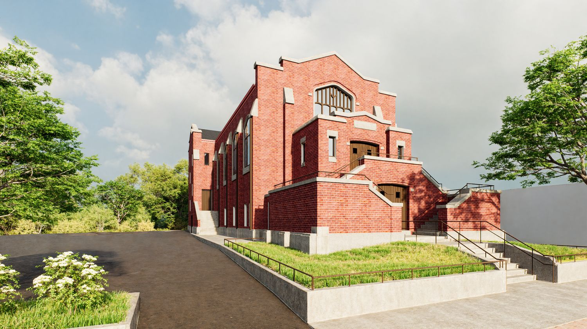

Restoring the Fifth Ward Chapel: Reviving a Salt Lake City Landmark
The Fifth Ward Chapel, also known as the Fifth Ward Meetinghouse, has stood at 740 South 300 West in Salt Lake City, Utah since 1910. Designed by the respected architectural firm Cannon & Fetzer, the chapel is an important example of Gothic Revival and Tudor Revival architecture and has long been recognized as a landmark of the city’s cultural and architectural heritage.

For more than six decades, the building served as a meetinghouse for the Church of Jesus Christ of Latter-day Saints. After being sold in the 1970s, the chapel found new life in many forms, including as a music venue, a Buddhist temple, and a community arts center. In recognition of its historic and architectural significance, the Fifth Ward Chapel was added to the National Register of Historic Places and designated a Salt Lake City Landmark in 1978.
In recent years, the chapel faced serious challenges. Following an unauthorized partial demolition in 2024, concerns grew about the loss of one of Salt Lake City’s most treasured historic structures. Fortunately, new ownership and a renewed commitment to preservation have given the building a second chance.
Knighton Architecture is honored to be leading the architectural restoration of the Fifth Ward Chapel. Our team has carefully studied the building’s history and original design, restoring the plans to reflect the chapel’s authentic 1910 appearance. This approach ensures that the structure will not only regain its historic character but also stand as a lasting example of preservation and adaptive reuse in Salt Lake City.

As the project progresses, the chapel will once again serve the community, providing space for renewal and connection while honoring its historic roots. At Knighton Architecture, we are proud to contribute our expertise in historic preservation and architectural restoration in Utah, and we look forward to seeing the continued progress of this important project.
Watch the video